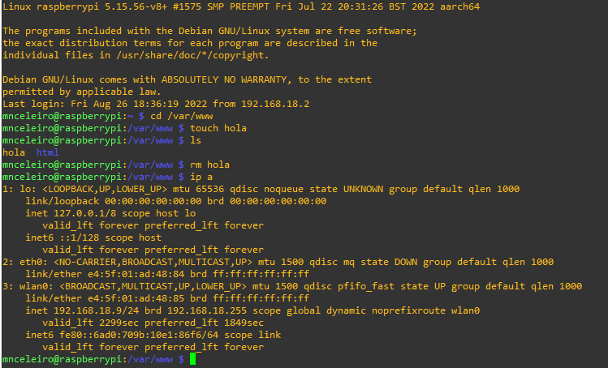

1. Comandos básicos en GNU/Linux
1.1 Terminal de comandos
Un terminal de comandos es una interfaz en modo texto usada para controlar un ordenador (ya sea Linux o Windows).
A continuación se muestra el ejemplo de un terminal de comandos en un sistema operativo basado en Linux (Raspbian): 
No te preocupes si lo que ves te resulta extraño ahora, ya que en pocos días entenderás perfectamente todo lo que aparece en esa imagen.
1.2 Tutorial de comandos básicos de GNU/Linux
1.3 Comandos de carpetas y ficheros
La raíz de todas las carpetas (también llamadas directorios) se denomina en Windows como C:. En GNU/Linux, en cambio, la raíz de todo es “/”. Un usuario se sitúa en Windows y GNU/Linux en las siguientes carpetas:
- Windows 10: C:/Usuarios/nombreUsuario/
- GNU/Linux: /home/nombreUsuario/
| Acción | Comando | Ejemplo |
|---|---|---|
| Ver dónde estás | pwd | pwd |
| Listar ficheros | ls -l ls -la ls -lh |
ls (muestra ficheros, pero no los ocultos) ls -l (muestra ficheros e información) ls -a (muestra ficheros, incluídos los ocultos) ls -lh (muestra información y "h" de human readable) |
| Moverse entre carpetas | cd ruta_carpeta | Si estoy en /home/mnceleiro puedo moverme a "Documentos" de dos formas: - Ruta absoluta (pongo la ruta completa) cd /home/mnceleiro/Documentos - Ruta relativa (pongo solo desde donde estoy) cd Documentos Para volver atrás (.. representa la carpeta superior) cd .. Estoy en /home/mnceleiro/ y quiero moverme a /home/mnceleiro/Descargas/dropbox (con ruta relativa): cd Descargas/dropbox Estoy en /home/mnceleiro/Descargas/Dropbox y quiero ir a /home/maria/misdatos (con ruta relativa): cd ../../../maria/misdatos (me estoy moviendo 3 carpetas atrás y luego a carpeta maria/misdatos) |
| Crear carpeta | mkdir nombre_carpeta | mkdir clase |
| Crear fichero vacío | touch nombre_fichero | touch datos.txt |
| Eliminar algo | rmdir nombre_carpeta rm nombre_fichero |
rm partidos rm -r MisFotos Si hay cosas dentro de una carpeta y queremos que borre la carpeta con todo el contenido de dentro hay que usar la opción -r . |
| Mover carpeta | Mover un fichero: mv origen destino Mover carpeta con cosas: mv -R origen destino |
Mover usando rutas absolutas (ruta completa) mv /home/mnceleiro/downloads/datos.txt /home/mnceleiro/documents/datos.txt Mover usando rutas relativas (relativo al directorio donde te encuentras) mv datos.txt ../documents.datos.txt Si usas la opción -R puedes mover una carpeta y todo lo que tiene dentro. |
| Cambiar nombre a algo | mv nombre_antiguo nombre_nuevo | mv datos.txt ../documents/datoscopia.txt También puede usarse para mover y con -R |
| Ver contenido de un fichero | cat cat -l |
cat /etc/shells (el archivo shells tiene una lista con los shells instalados en el sistema) cat /etc/passwd (en este fichero se almacenan los datos de los usuarios del sistema) |
1.4 Instalación de software
Existen distintas tiendas de aplicaciones según la distribución GNU/Linux usada así como gestores de paquetes. El gestor de paquetes más conocido se llama APT y es usado en distribuciones basadas en Debian, por ejemplo: Ubuntu, Linux Mint, Zorin OS, Steam OS.
Los comandos más interesantes a usar con la herramienta APT son los siguientes:
| Acción | Comando | Ejemplo |
|---|---|---|
| Instalar | apt install programa | sudo apt install kdenlive Para instalar sin que pida confirmación: sudo apt install -y libreoffice |
| Eliminar | apt remove programa | sudo apt remove gimp |
| Actualizar | apt update apt upgrade |
sudo apt update sudo apt upgrade |
Es importante tener en cuenta que apt no es el único gestor de software disponible. Aunque apt es probablemente la mejor forma de instalar cosas, a veces hay aplicaciones que no se encuentran aquí. Si no encuentras la aplicación en apt podrías buscar la aplicación en internet y descargarla desde la página oficial (tal y como harías en Windows) o incluso buscar en internet algún tutorial de como hacerlo, por ejemplo:
Te recomiendo hacerlo filtrando por "último año" o por la versión de Linux que tengas. Por ejemplo: "Instalar Spotify en Ubuntu 20.04".
1.5 Comandos básicos relacionados con el sistema
| Acción | Comando |
|---|---|
| Ver manual de un comando | man comando man ls |
| Reiniciar ordenador | sudo reboot |
| Apagar ordenador | sudo shutdown -h now |
| Ver procesos | top htop ps ps -ef |
| Probar conexión y latencia | ping www.google.com ping 151.101.133.50 |
| Ver información de red | ip address |
| Mostrar mensaje por pantalla | echo "mensaje". Por ejemplo: echo "Hola mundo" echo "Estoy ejecutándome en el SHELL: $0." |
1.6 Gestión de procesos
| Acción | Comando | Descripción/Ejemplos |
|---|---|---|
| Ver procesos | top htop ps -ef |
top y htop son interactivos (htop requiere instalación). Ejemplo de ps: ps -ef | grep firefox (filtra procesos con nombre firefox mediante grep) |
| Ver procesos (en forma de árbol) | pstree | ps + tree |
| Matar procesos (por código) | kill [-código] |
Supongamos que queremos matar firefox (hay que mirar cuál es su ID de PROCESO, puedes hacerlo usando htop o ps):ps -e \| grep firefoxMatar un proceso de forma normal (por defecto usa código 15): kill 12345Matar un proceso de manera forzada (p. ej: si se queda trabado). Para matar de forma forzada el código es el 9: kill -9 12345 |
| Matar procesos (por nombre) | killall [-código] |
killall firefoxMatar el proceso (forzandolo): killall -9 firefox |
Puedes consultar más información sobre como matar procesos y envío de señales a procesos aquí.
Referencias:
- Imran Afzal. Complete Linux Bash Shell Scripting with Real Life Examples. Udemy. Disponible en: https://www.udemy.com/course/linux-bash-shell-scripting-through-real-life-examples/